Generated by build-overview.mjs from each group's manifest.json. Scripts: build-pots, build-characters, build-streaks, build-finishes.
Kiln Meadow
96 x 120
Kiln Meadow (gold)
96 x 120
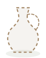
Kiln Meadow (not fired)
96 x 120
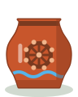
Clay Creek
96 x 120
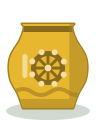
Clay Creek (gold)
96 x 120
Clay Creek (not fired)
96 x 120
Sunflower Fields
96 x 120
Sunflower Fields (gold)
96 x 120
Sunflower Fields (not fired)
96 x 120
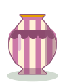
Market Town
96 x 120
Market Town (gold)
96 x 120
Market Town (not fired)
96 x 120
Seaside Pier
96 x 120
Seaside Pier (gold)
96 x 120
Seaside Pier (not fired)
96 x 120
Bluegum Forest
96 x 120
Bluegum Forest (gold)
96 x 120
Bluegum Forest (not fired)
96 x 120
Lantern Gardens
96 x 120
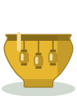
Lantern Gardens (gold)
96 x 120
Lantern Gardens (not fired)
96 x 120
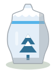
Snowy Peaks
96 x 120
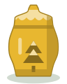
Snowy Peaks (gold)
96 x 120
Snowy Peaks (not fired)
96 x 120
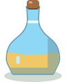
Glass Desert
96 x 120
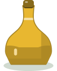
Glass Desert (gold)
96 x 120
Glass Desert (not fired)
96 x 120
The Great Kiln
96 x 120
The Great Kiln (gold)
96 x 120
The Great Kiln (not fired)
96 x 120
Not fired yet
96 x 120
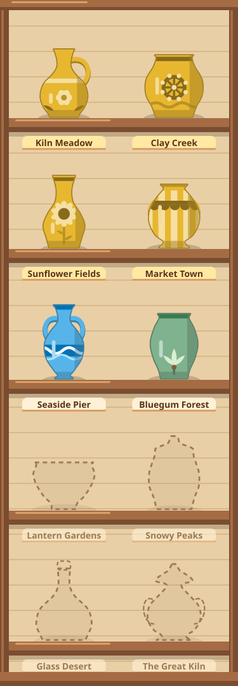
Pottery shelf (sample)
375 x 1080
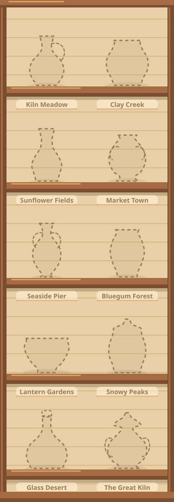
Pottery shelf (all not fired)
375 x 1080
potter (map)
32 x 40
potter (side)
58 x 72
dog (map)
32 x 40
dog (side)
58 x 72
duck (map)
32 x 40
duck (side)
58 x 72
scarecrow (map)
32 x 40
scarecrow (side)
58 x 72
cat (map)
32 x 40
cat (side)
58 x 72
kiln master (map)
32 x 40
kiln master (side)
58 x 72
market stallholder (map)
32 x 40
market stallholder (side)
58 x 72
koala (map)
32 x 40
koala (side)
58 x 72
ferry captain (map)
32 x 40
ferry captain (side)
58 x 72
snow-goat (map)
32 x 40
snow-goat (side)
58 x 72
lantern keeper (map)
32 x 40
lantern keeper (side)
58 x 72
camel trader (map)
32 x 40
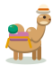
camel trader (side)
58 x 72
7 day streak (bronze glaze)
96 x 96
14 day streak (silver glaze)
96 x 96
21 day streak (gold glaze)
96 x 96
Month 1 streak (30 days)
96 x 96
Month 2 streak (60 days)
96 x 96
Month 3 streak (90 days)
96 x 96
Month 4 streak (120 days)
96 x 96
Month 5 streak (150 days)
96 x 96
Month 6 streak (180 days)
96 x 96
Month 7 streak (210 days)
96 x 96
Month 8 streak (240 days)
96 x 96
Month 9 streak (270 days)
96 x 96
Month 10 streak (300 days)
96 x 96
Month 11 streak (330 days)
96 x 96
Month 12 streak (1 year, 360 days)
96 x 96
Year and months streak template (1y 3m placeholder)
96 x 96
Streak badge not yet earned
96 x 96
Daily gift kiln, door shut
96 x 110
Daily gift kiln, ready to open (glowing)
96 x 110
Daily gift kiln, open with a gift out front
96 x 110
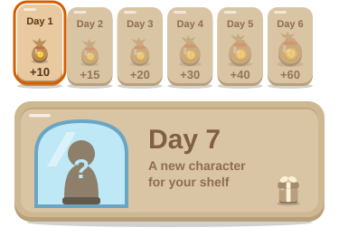
Daily gift row, 7 days (day 1 today)
375 x 262
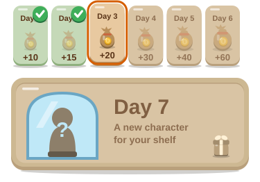
Daily gift row, days 1 and 2 claimed, day 3 today
375 x 262
Daily Kiln home-screen icon
64 x 64
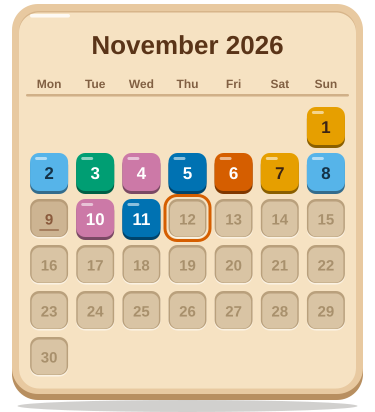
Monthly calendar plate, November 2026 sample
375 x 412
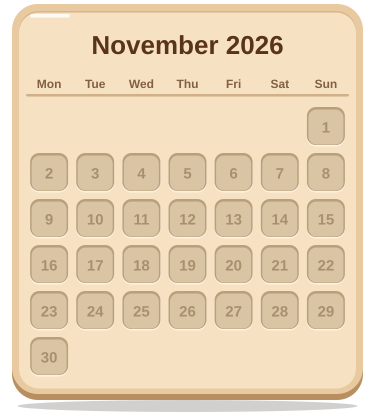
Monthly calendar plate, empty month
375 x 412
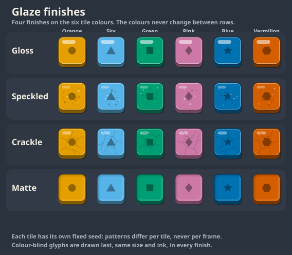
Four glaze finishes on six tile colours
600 x 524
Exit effect: kiln puff, peak frame (180 ms)
160 x 160
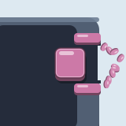
Exit effect: petals, peak frame (220 ms)
160 x 160
Exit effect: glaze splash, peak frame (150 ms)
160 x 160
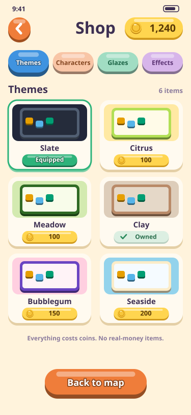
Shop screen mock-up (375x812)
375 x 812
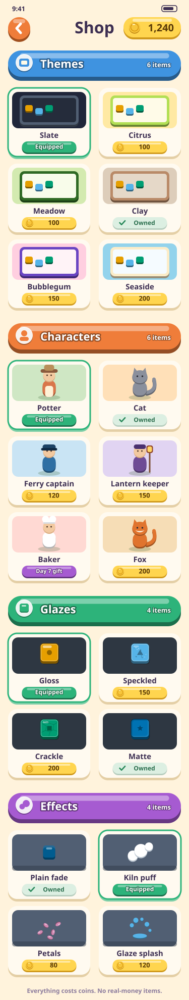
Shop as one scrolling page, four sections stacked
375 x 1980